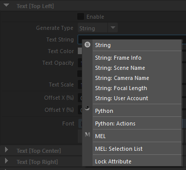
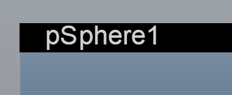
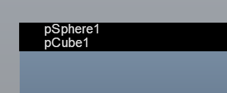
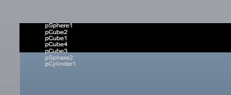
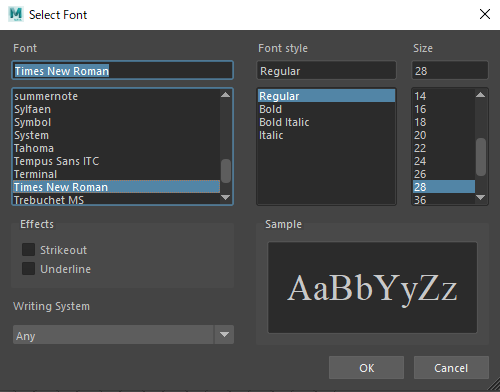

テキスト¶
このページの目次:
概要¶
RenderOverrideは、表示させるテキストを自由にカスタマイズすることができます
文字のフォント、カラー、不透明度、大きさ、表示位置のオフセットを設定することができます
フォントが対応していれば、日本語を表示させることもできます
複数行の表示が可能です
通常の文字列での指定のほかに、PythonやMELコマンドを使った、複雑な情報を表示することもできます
例えば、MELの
ls -selectionを入力すると、選択しているオブジェクトのリストが表示されますまた、RenderOverrideノードのActionsアトリビュートと組み合わせて、アクション情報を表示させることもできます(特にゲームモーション作成時を想定した機能になります。(Actions (外部Pythonファイルの利用)))
{kind=link}
アトリビュート¶
テキストのグループ¶
Textグループが9つ用意されています。グループ名
ResolutionGate内での表示場所 (テキストの整列)
Text [Top Left]
左上 (左寄せ)
Text [Top Center]
上中央 (中央)
Text [Top Right]
右上 (右寄せ)
Text [Center Left]
左中央 (左寄せ)
Text [Center]
中央 (中央)
Text [Center Right]
右中央 (右寄せ)
Text [Bottom Left]
左下 (左寄せ)
Text [Bottom Center]
下中央 (中央)
Text [Bottom Right]
右下 (右寄せ)
表示位置ごとに、テキストを設定することができます
表示させるポジションの基準は、ResolutionGateになります
各グループ内のアトリビュート¶
各グループ内のアトリビュートの構成は同じになっています
(各アトリビュートの概要)
アトリビュート |
概要 |
|---|---|
Enable |
各グループごとに有効/無効を切り替えることができます |
Generate Type
|
Text String アトリビュートに記述した文字をそのまま表示させる時は” String “にします。スクリプトを実行させたいときは、” Python “や” MEL “を選択します。
|
Text String |
表示させたい文字を入力します。スクリプトを実行させたいときは、コードを記述します。 |
Text Color
|
|
Text Opacity |
テキストの不透明度(0.0: 透明, 1.0: 不透明) |
Fit text size to letterbox |
文字の大きさを レターボックス の大きさに合わせます。 |
Text Scale |
自動計算されたテキストサイズに対し、スケールを掛けます。 |
Offset X (%) |
横軸のオフセット値。 ResolutionGateの幅に対し、オフセットの割合を指定します。 |
Offset Y (%) |
縦軸のオフセット値。 ResolutionGateの高さに対し、オフセットの割合を指定します。 |
Font |
フォントを設定します。Font Dialog / Set Default ボタンから編集を行います。 |
Generate Type¶
String
Text Stringアトリビュートに記述した文字をそのまま表示させる時は” String “を選択します
Python
Pythonコードを実行させたいときは” Python “を選択します
外部ファイル(.pyなど)を実行させたいときは、予め
PYTHONPATHを通しておくなど、対応が必要です
MEL
MELコードを実行させたいときは” MEL “を選択します
外部ファイル(.mel)を実行させたいときは、Maya®が認識できるように環境を整えてください
Text String¶
表示させる文字や、実行させるコードを記述します
(Generate Typeが String の場合)¶
表示させたい文字を入力します
改行する時は、改行コード(
\n)を行間に挿入します例:
1行目\n2行目\(バックスラッシュ)は、日本語キーボードの場合は”￥(円マーク/半角)”のキーを押下してください
予め用意されているキーワード(変数)を波カッコ(
{})で囲って入力すると、値を置き換えて表示されます例:
{FOCAL_LENGTH}=>35.0
キーワードと通常の文字列を組み合わせることもできます
例:
{FOCAL_LENGTH}mm=>35.0mm
表示オプション(波カッコの中の、コロンの後の書式)を使うと、”小数点の桁数を揃える”など、出力を制御できます
例:
{FOCAL_LENGTH:.3f}=>35.000(小数点を3桁に揃える)表示オプションは Pythonの文字format に準拠しています
(キーワード (変数)と意味)
キーワード (変数) |
意味 |
置き換わる値(例) |
|---|---|---|
ANIM_START_TIME |
アニメーションの開始時間 |
1.0 |
ANIM_END_TIME |
アニメーションの終了時間 |
48.0 |
MIN_TIME |
再生のタイムレンジの開始時間 |
5.0 |
MAX_TIME |
再生のタイムレンジの終了時間 |
24.0 |
CUR_TIME |
現在の時間 |
10.0 |
SCENE_NAME |
Maya®ファイル名(ファイルが保存されていなければ”Untitled”) |
PRJ_ChrA_model_v001.ma |
CAM_NAME |
ビューのカメラ名 |
persp |
FOCAL_LENGTH |
カメラの焦点距離 |
35.0 |
USER |
マシンにログインしているユーザー名 |
JohnSmith |
DATE_JP |
本日の日付(日本式フォーマット) |
2022/04/25 |
DATE_US |
本日の日付(アメリカ式フォーマット) |
Apr 25, 2022 |
DATE_UK |
本日の日付(イギリス式フォーマット) |
14 Apr 2022 |
(キーワード、文字、表示オプション( Pythonの文字format )の組み合わせ例)
アトリビュートに入力する値 |
出力例 |
備考 |
|---|---|---|
[{MIN_TIME:.0f} - {MAX_TIME:.0f}] {CUR_TIME:03.0f} |
[1 - 48] 005 |
再生のタイムレンジの”開始/終了時間”と、現在のフレームを表示します。
キーワードの後の
:.0f で、小数点部分を取り除くことができます(“小数点部分を0桁にする”)。キーワードの後の
:03.0f で、小数点部分を取り除き、整数部分を3桁にすることができます。 |
|
|
焦点距離を、小数点1桁で( |
(Generate Typeが Python , MEL の場合)¶
外部のPythonスクリプトを実行させる時は、次のように記述します(
PYTHONPATHなどを通して、Maya®が認識できるようにしておいてください)import actions;actions.actions_text()
Pythonスクリプトを活用した例は、 こちら で紹介しています
MELコマンドを直接実行する場合は、次のように記述します
ls -selection
選択されているオブジェクトのリストが表示されます
(右クリックからプリセットを適用する)¶
テキストボックス上で右クリックすると、メニューが表示されます
いずれかのプリセットを選択すると、
Generate TypeとText Stringのアトリビュートが更新されます
Text Color¶
テキストのカラーを設定します
Note
カラーの設定後、リアルタイムに変更が反映されない問題があります。
詳しくは、「Colorアトリビュートの色を変更しても、ビューに直ぐに反映されない」をご確認ください。
Text Opacity¶
テキストの不透明度を設定します
Fit text size to letterbox¶
テキストのサイズを、レターボックス の高さに合うように調整します
テキストが複数行の場合は、全ての行がLetterbox内に収まるように調整されます
※テキストは10px以上を保とうとする為、Letterboxの高さが十分でない場合は、はみ出すことがあります

Text Scale¶
自動計算されたテキストサイズに対し、スケールを掛けます
デフォルトでは、テキストのサイズはResolutionGateの高さに応じて自動計算されます
Fit text size to letterboxアトリビュートがonになっている場合は、Letterboxの高さに応じてテキストのサイズを自動計算します
スケールを掛けた結果、テキストのサイズが10pxを下回った場合は、10pxに固定されます
Offset X (%)¶
自動計算されたポジションから、横軸にオフセットさせる割合を指定します
ResolutionGateの幅を基準に計算されます
Offset Y (%)¶
自動計算されたポジションから、縦軸にオフセットさせる割合を指定します
ResolutionGateの高さを基準に計算されます
Font¶
フォントを設定します
フォントファミリー、太さ、イタリック、下線の表示などを指定できます
直接編集できないようになっているので、Font Dialog/Set Default ボタンから編集を行います
Font Dialog ボタン
FontDialogが表示されます
このダイアログで、
Font,Font style,Strikeout,Underlineを設定しますWarning
Size は適用されません
(ResolutionGateの高さに応じて自動計算されるため)
テキストのサイズは、自動計算されたサイズに
Text Scaleの値を掛けて調整してください
Strikeout (打消し線)と Underline (下線)は同時に使えません
両方チェックを入れた場合は、 Underline が優先されます
Set Default ボタン
Maya®デフォルトのフォントに設定します